Indholdsfortegnelse:
- Link til GitHub-repository
- Brugerresearch
- Experience map
- Problemformulering
- Persona
- Storyboard
- Features og funktionaliteter
- Dokumentation af Design Charette
- Prototype
- XD prototype
- Test af prototype
- Præsentation af XD-prototype
Link til GitHub-repository:
https://github.com/ceci7502/ux-uge-1.git
Brugerresearch:
Indsaml og organiser data
Dette er allerede indsamlet og ligger i et fælles dokument på Fronter.
Måden det er insamlet på er gennem et spørgeskema for hele klassen.
Formålet med dette har været at få så mange svar fr amålgruppen, som netop er studeerende på KEA.
Data-mining
Ved at se alle besvarelserne igennem har jeg udvalgt interessante besvarelser, som understøtter pointer eller er ny/god viden indenfor emnet:
Jeg bruger min smartphone til:
"Alt som skal kunne gøres på farten, som at tjekke opdateringer, nyheder, småligt skole arbejde osv.""Alt, kontakt med andre, tjekke ting, opdaterer ting"
"Jeg bruger min smartphone til: Mail, sms, bank."
Hvad foretrækker du at bruge din desktop til fremfor smartphone?:
"Jeg foretrækker at bruge min desktop til at læse lektier, se længere videoer eller film og at spille spil.""Faktisk kun ting, jeg ikke kan på min smartphone - skoleopgaver."
Kodning af data
Ud fra disse citater vil man kunne lave nogen overordnede temaer, der gør sig gældende ud fra informationerne, som fx. kan være:
- Fleksibilitet
- Let tilgængelig
Disse temaer er relevante, da mange der har deltaget i spørgeskemaet ligger vægt på at de især gør brug af deres smartphone for at gøre deres hverdag nemmere.
De bruger den derfor i deres dagligdag til at tjekke op på fx. mail, skole, sociale medier mm., da dette er nemmere og hurtigere end på en computer og derofr også noget de ønsker fra KEA's app.
Indsigter
Ud fra disse citater og temaer vil man kunne omskrive dette til insigter som fx.:
"Danske studerende er interesseret i at gøre deres hverdag nemmmere vha. hurtigere løsninger gennem deres smartphones."
Experience map:
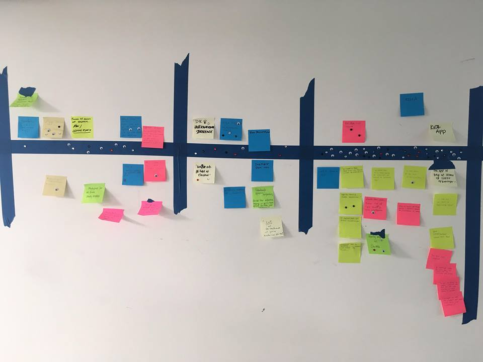Problemformulering:
"Hvordan kan man lave en app, som gør det muligt for studerende at hjælpe hinanden med studierne - med opgaveløsninger"
Persona:
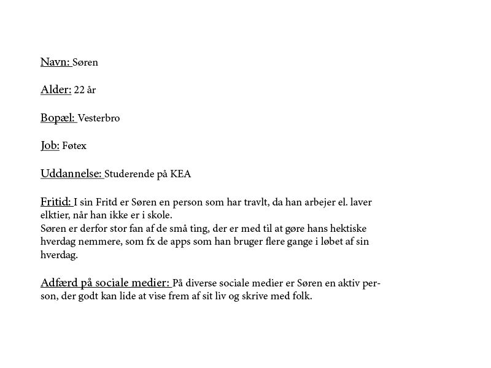Storyboard:
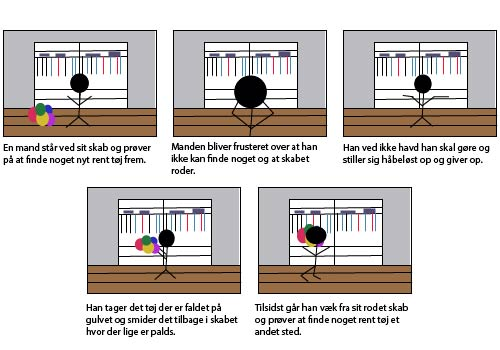Features og funktionaliteter:
Aktiviteter og feature set for KEA app:
- Oprette sig som bruger
- Uploade billede på profil
- Indtaste navn
- Indtaste kompetencer
- Søge efter folk
- Indtaste brugernavn
- Uploade dokumenter
- Indtaste beskrivelser, spørgsmål og svar
- Få push notifikationer
- Chat funktion
- Tilbage knap
- Privat samtale
- Offentlig samtale
Dokumentation af Design Charette:
Skitse:
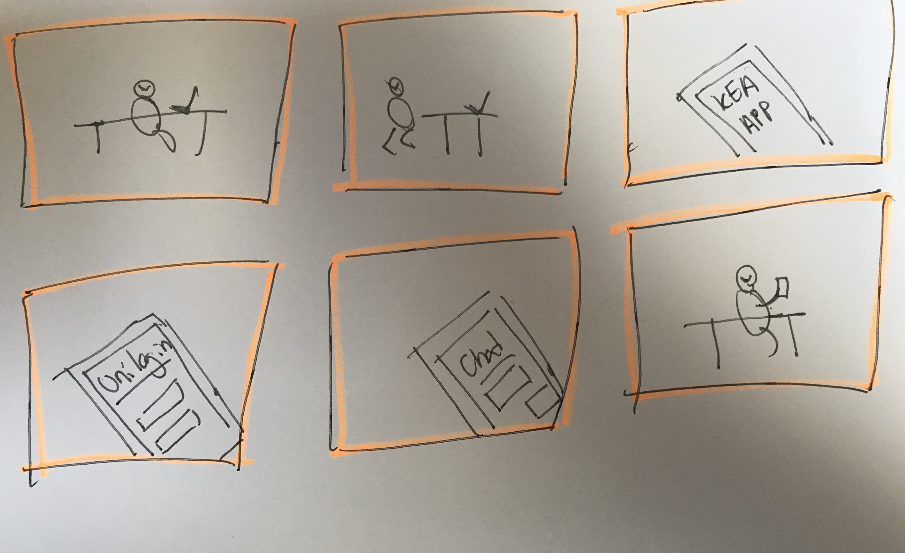Udvælgelse:
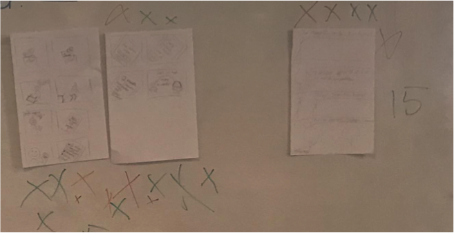Storyboard:
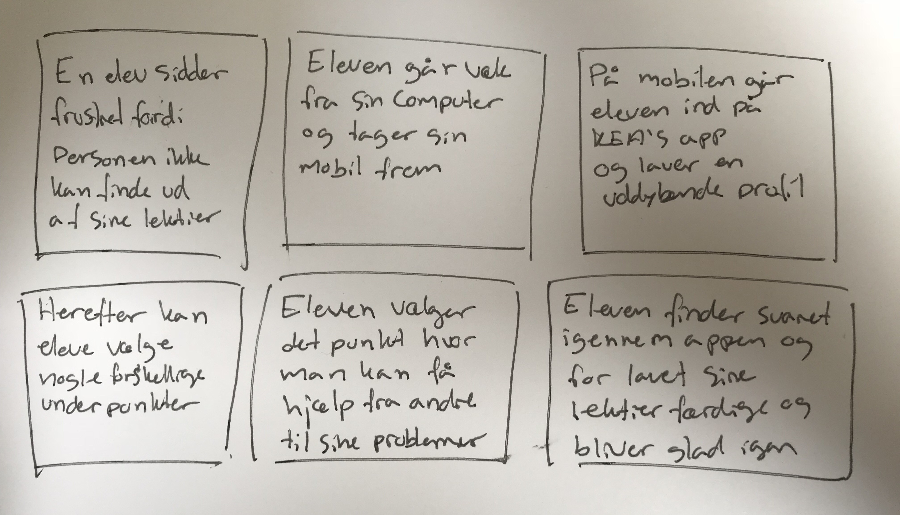Prototype:
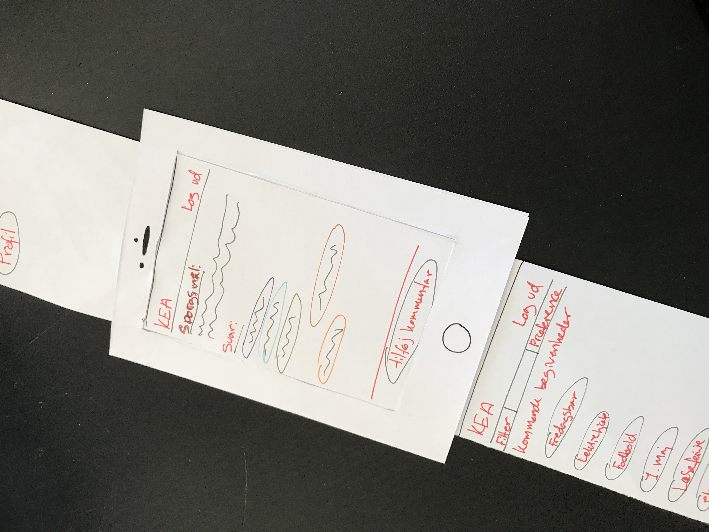 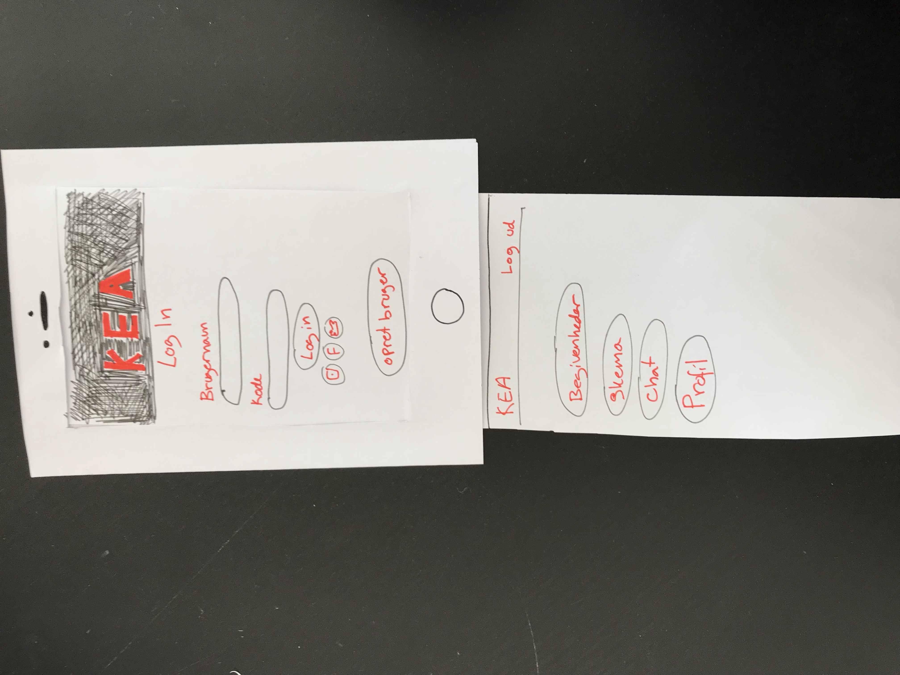 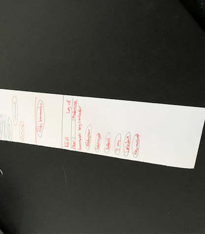XD prototype:
Proces:
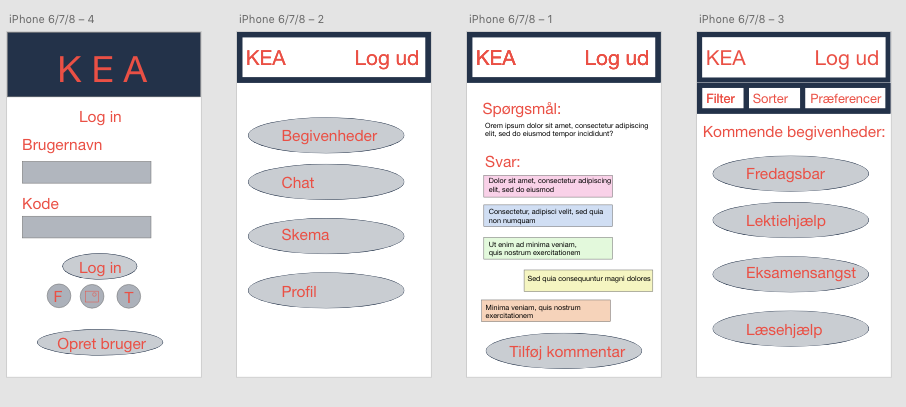 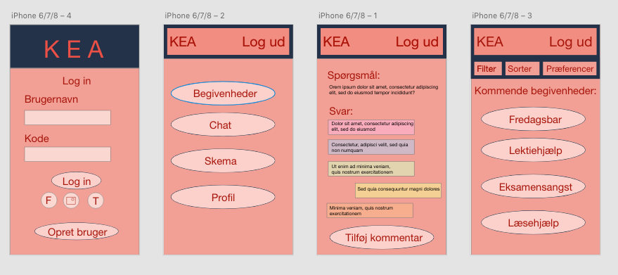 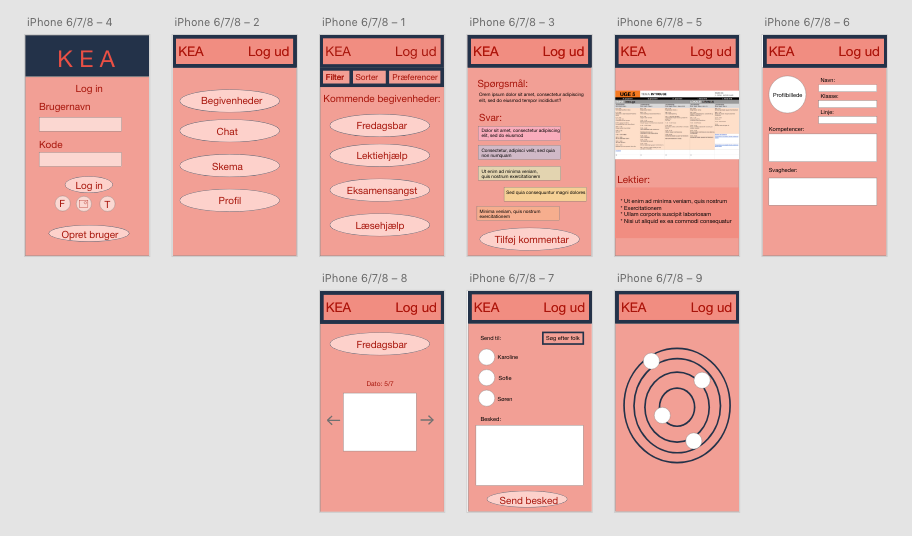Test af prototype:
Spørgsmål/opgaver:
Spørgsmål om hvad man gerne vil have svar på ud fra hvad der er ens mål
- Er siden overskuelig?
- Hvor let tilgengæelig fremkommer den?
- Har den en rød tråd til KEA's egen hjmmeside?
Svar på undersøgelse/ test:
Tænke højt fasen, hvor deres tanker og følelser noteres
Testperson 1:
Forskellige løsningsforslag:
Forslag på hvordan de identificerede problemer kan løses
- Lave nemmere genveje
- Bedre beskrivelse af punkterne
- Lave en introduktion til hvordan app'en fungere når man opretter sig som bruger
- Hurtigere genveje
- ...
Test igen:
Test om et af løsningsforslagende virkede
Testperson 1:
...